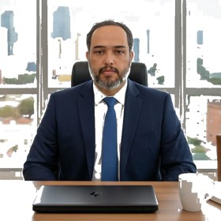
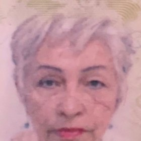

Demonstrações auditadas, assegurança por convênio e relatório de aplicação de recursos — o que financiadores, editais e órgãos de controle exigem de entidades sem fins lucrativos. Com a independência de uma auditoria registrada na CVM.
ITG 2002
Norma contábil (R1)
R$ 4,8 mi
Gatilho auditoria CEBAS
R$ 600 mil
Gatilho OSCIP
40 anos
Auditoria independente
Para quem é
Fundações, associações, institutos e organizações que captam recursos públicos ou privados precisam demonstrar, com transparência, que aplicaram cada real conforme a finalidade. A auditoria independente é o instrumento que dá credibilidade a essa prestação de contas.
Fiscalizadas pelo Ministério Público (velamento). Prestação de contas anual com relatório de auditoria quando exigido.
Código Civil art. 66 · CNMP 300/2024Entidades de assistência, saúde, educação, cultura e meio ambiente que recebem doações, convênios e parcerias.
ITG 2002 (R1)Qualificações que firmam Termo de Parceria ou Contrato de Gestão com o poder público, com prestação de contas própria.
Lei 9.790/99 · Lei 9.637/98Normas aplicáveis
Norma contábil das entidades sem fins lucrativos: Balanço, Demonstração do Resultado do Período (superávit/déficit), DMPL, DFC e notas, com segregação por projeto e registro de gratuidade e trabalho voluntário.
Revisão NBC 29 · vig. 2025Auditoria das demonstrações (opinião independente) e auditoria de demonstrações de propósito especial — o relatório por projeto ou convênio que o financiador pede.
NBC TA 700 / 705 / 800Procedimentos previamente acordados: verificação factual de itens específicos exigidos por edital ou doador, quando não cabe opinião plena sobre as DFs.
Prestação de contas de projetoMarco Regulatório das Organizações da Sociedade Civil: termos de colaboração, fomento e acordo de cooperação com o poder público, com relatório de execução do objeto e financeira.
Lei 13.019/2014 · Dec. 8.726/2016Certificação de Entidades Beneficentes (saúde, educação, assistência) que garante imunidade de contribuições — exige DFs auditadas acima do limite de receita.
LC 187/2021 · Dec. 11.791/2023Endowment: organização gestora com demonstrações auditadas acima do limite de patrimônio, divulgação anual e governança de integridade.
Lei 13.800/2019Quando a auditoria é obrigatória
Não há regra única — a obrigatoriedade nasce da certificação, da parceria ou da exigência do financiador.
Demonstrações auditadas quando a receita bruta anual ultrapassa R$ 4,8 milhões.
LC 187/2021 · Dec. 11.791/2023
Auditoria independente da aplicação de recursos quando o Termo de Parceria é igual ou superior a R$ 600 mil.
Decreto 3.100/1999, art. 19
Demonstrações da gestora auditadas quando o patrimônio líquido supera R$ 20 milhões.
Lei 13.800/2019 (IPCA)
Em MROSC, organizações sociais e fundações, a auditoria costuma ser exigida pelo próprio instrumento, edital ou financiador — mesmo abaixo desses limites.
Financiadores externos
Convênios e parcerias prestados via Transferegov.br (antiga Plataforma +Brasil): execução do objeto, relatório financeiro e devolução de saldo, sob risco de Tomada de Contas Especial.
Doadores estrangeiros, agências e editais internacionais que exigem relatório de auditoria do projeto conforme o grant agreement — em propósito especial ou procedimentos acordados.
Institutos financiadores, fundações empresariais e editais privados que pedem parecer de auditoria independente e relatório de aplicação de recursos por projeto.
O que está em jogo
Contas mal prestadas não geram apenas retrabalho — podem custar recursos, certificações e a responsabilização pessoal dos dirigentes.
Como a AUDIPER conduz
40 anos auditando o terceiro setor. Tratamos a prestação de contas como auditoria preventiva: mapeamos o risco de glosa antes de ele virar devolução de recursos.
Opinião independente sobre as DFs anuais — obrigatória para CEBAS e endowment, valorizada por qualquer entidade que capta recursos.
Relatório de propósito especial por fonte de recurso, alinhado ao Transferegov e às exigências de cada edital.
Verificação factual de itens específicos exigidos por doador ou edital, com relatório objetivo de achados.
Demonstração, por projeto, de que cada real foi aplicado conforme a finalidade e o plano de trabalho.
Diagnóstico de aderência (DRP, DMPL, DFC, segregação por projeto, gratuidade), pré-auditoria e estruturação para CEBAS, OSCIP ou endowment.
Entregável formal exigido por institutos, fundações e cooperação internacional, com a credibilidade do registro CVM 5290.
Dúvidas frequentes
Por receita, a obrigatoriedade legal só surge em gatilhos específicos (CEBAS acima de R$ 4,8 mi, OSCIP acima de R$ 600 mil, endowment acima de R$ 20 mi de PL). Mas muitos editais e financiadores exigem auditoria ou procedimentos acordados independentemente do porte — e a auditoria fortalece a captação.
Na auditoria (NBC TA) emitimos uma opinião sobre as demonstrações. Nos procedimentos previamente acordados (NBC TSC 4400) executamos verificações específicas combinadas com o contratante e relatamos os achados factuais, sem opinião. O edital ou o financiador define qual cabe.
A ITG 2002 exige segregação contábil por projeto e por fonte com restrição. Estruturamos essa segregação e emitimos relatório de aplicação por convênio, evitando a mistura de fontes que gera glosa.
Ao Ministério Público estadual, que exerce o velamento (Código Civil, art. 66), geralmente por sistema próprio e com prazo anual definido em provimento. O relatório de auditoria independente é exigido conforme o caso e o porte.
Próximo passo
Equipe consolidada, 40 anos de auditoria independente, com experiência em fundações, associações e entidades certificadas. Um diagnóstico preliminar mostra suas obrigações e o risco a tratar.
audiper@audiper.com · audiper.com
Conteúdo informativo de caráter geral; não constitui opinião de auditoria nem aconselhamento jurídico individualizado. Limites e obrigações podem variar conforme instrumento, edital e legislação vigente. Base normativa: ITG 2002 (R1) e Revisão NBC 29, NBC TA, NBC TA 800, NBC TSC 4400 (R1), Lei 13.019/2014, Lei 9.790/1999, Lei 9.637/1998, LC 187/2021, Lei 13.800/2019.
Quem assina
Nossos auditores

Prof. Ricardo Augusto dos Santos RibeiroSócio-Diretor · Responsável TécnicoCRC/PI 5.374/O · Mestre UnB · Perito Federal
Profa. Maria de Nasaré dos Santos RibeiroAuditora Sênior · Quality Review (EQCR)CRC/PI 2.629 · CNAI 1.468